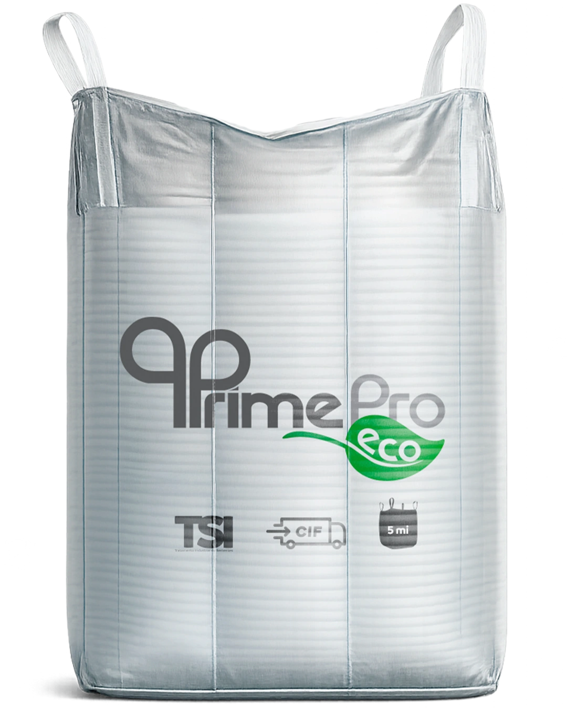
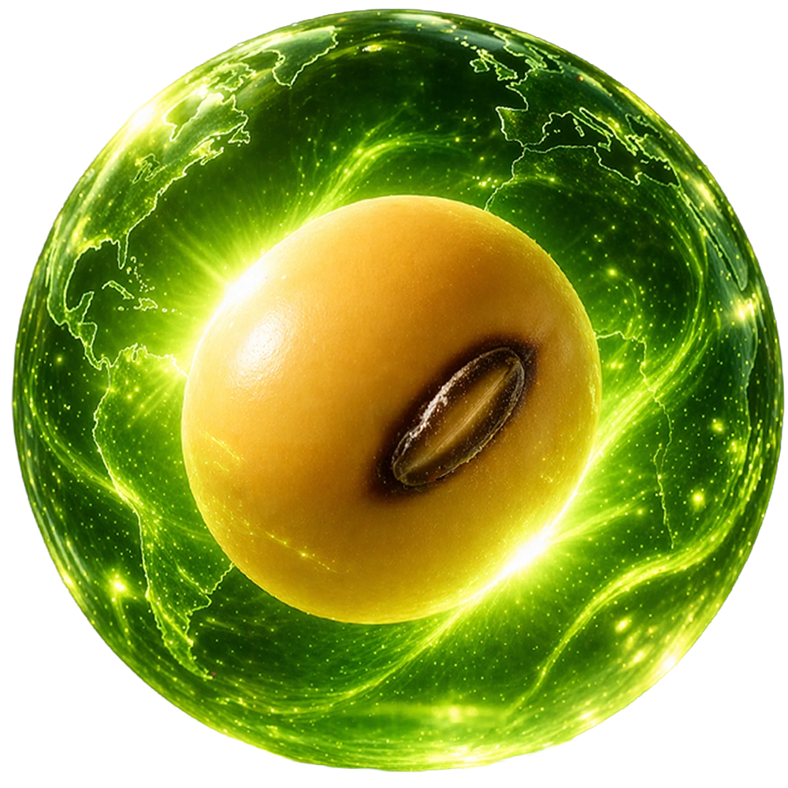

Emissões diretas
Operações da própria empresa, como o uso de combustíveis em máquinas.
Escopo 1O mesmo vigor.
Um novo compromisso.
Sementes de soja Petrovina com compensação de carbono no processo de produção. Um novo olhar para o próximo ciclo.

O PrimePro Eco une a qualidade da semente de soja à compensação das emissões de carbono da sua produção.
A genética, o vigor e o desempenho agronômico são mantidos. A iniciativa acrescenta um compromisso ambiental ao cuidado com a semente.
Como funciona a compensação
O inventário de carbono organiza as emissões em três escopos. Esse levantamento orienta o processo de compensação.
Operações da própria empresa, como o uso de combustíveis em máquinas.
Escopo 1Emissões indiretas associadas à energia elétrica consumida nas operações.
Escopo 2Outras emissões indiretas, como fornecedores, transporte e resíduos.
Escopo 3Referências apresentadas pela Petrovina na iniciativa.
No PrimePro Eco, a proposta é compensar as emissões de carbono do processo de produção das sementes.
A Petrovina mantém a genética, o vigor e o desempenho agronômico da semente.
Converse com nosso time sobre cultivares, disponibilidade e condições para o seu próximo plantio. Encontre seu especialista
Leve suas perguntas ao nosso time e conheça o PrimePro Eco de perto.
Faça seu orçamento Voltar para a Petrovina